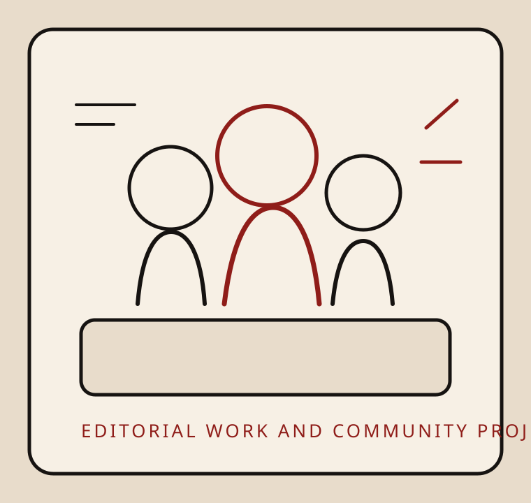

Ripple Effects Project Writer
Produced candid photo essays and multimedia compositions that combine observation, writing, and wildlife photography for educational and literary contexts.
Projects
The projects here were chosen for how clearly they represent literary judgment, public communication, and collaborative leadership.

Completed Writing Projects
Produced candid photo essays and multimedia compositions that combine observation, writing, and wildlife photography for educational and literary contexts.
Worked within an editorial team to review verse submissions, assess literary quality, and help shape a journal grounded in strong editorial standards.
Developed a novella-length creative nonfiction manuscript through workshops, revision, and sustained independent writing.
Community Projects
Drafted community events, built promotional strategy, and produced professional writing to support student-serving educational programs.
As president, organized interviews and panel events while managing budgets and deadlines for a foster youth support organization.
Presented qualitative research on the collegiate experiences of foster youth and translated advocacy work into a professional public forum.
Organized project data, coordinated volunteers, and worked with faculty across disciplines to support a three-bin campus waste system.